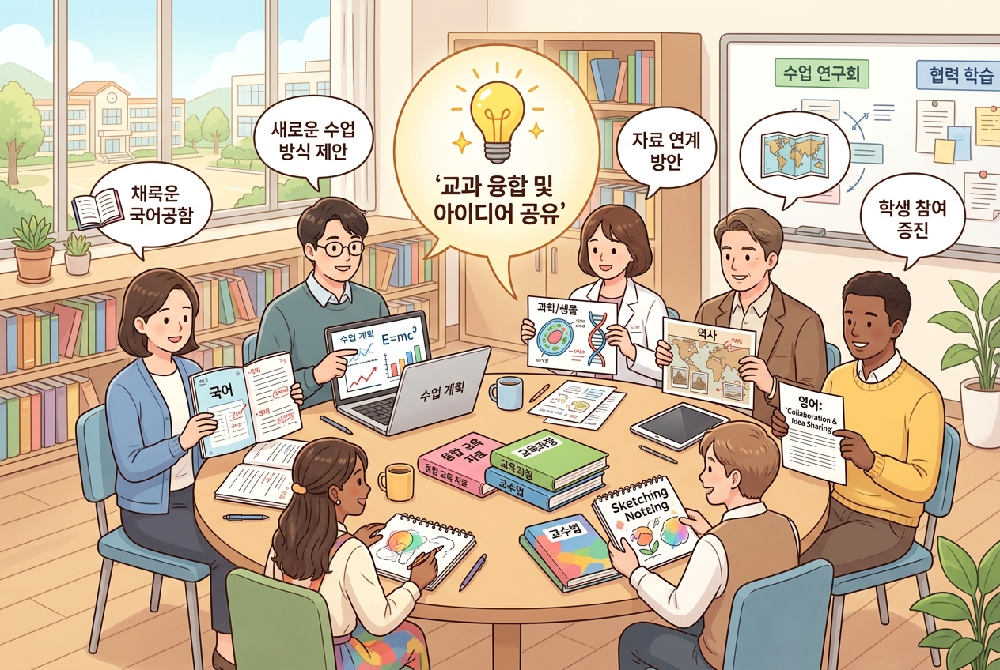
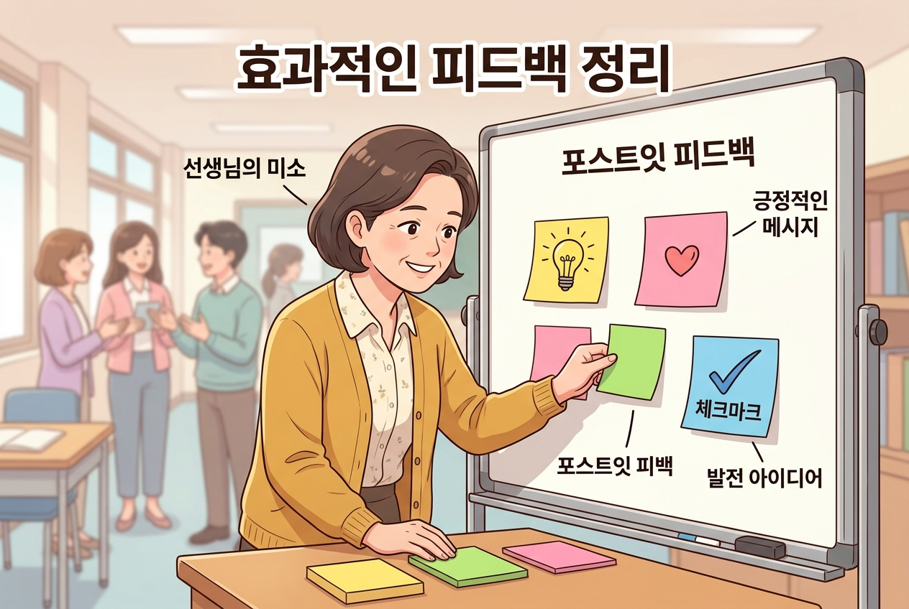

7차시: 나누기 — 서로의 결과물에서 배우기¶
🎯 이 장에서 배우는 것¶
- 자신이 만든 자료를 3분 이내로 간결하게 발표할 수 있다
- 동료 교사의 활용 사례에서 내 수업에 적용할 아이디어를 얻을 수 있다
- 협력적 피드백을 주고받아 자료의 완성도를 높일 수 있다
왜 이걸 배우나요? 🤔¶
6차시까지 여러분은 각자의 교과에 맞는 교육자료를 만들어 보았습니다. 그런데 혼자서 작업하다 보면 "이게 정말 괜찮은 걸까?", "다른 방법은 없었을까?" 하는 생각이 들기 마련이죠.
요리에 비유해 볼까요? 같은 재료(AI 도구)를 사용해도 국어 선생님은 한식을, 수학 선생님은 양식을, 체육 선생님은 디저트를 만들어냅니다. 서로의 요리를 맛보는 시간이 바로 이 차시입니다. 한 접시만 맛보면 하나만 알지만, 여러 접시를 맛보면 재료 활용법 전체가 보이기 시작합니다.

📚 핵심 개념¶
개념: 협력적 피드백 (Collaborative Feedback)¶
1. 비유로 시작 ☕
협력적 피드백은 마치 독서 모임과 같습니다. 같은 책을 읽어도 각자 다른 부분에서 감동하고, 다른 해석을 내놓죠. "나는 그 부분을 이렇게 읽었어요"라고 말할 때, 비판이 아니라 새로운 시각의 선물이 됩니다.
2. 정확한 정의
협력적 피드백이란, 결과물의 좋은 점을 먼저 인정한 뒤 개선 가능성을 제안 형태로 전달하는 소통 방식입니다. 핵심은 평가가 아닌 대화라는 점입니다.
3. 예시로 확인
| 일반적 피드백 😐 | 협력적 피드백 😊 |
|---|---|
| "이 부분이 좀 부족해요" | "이 부분에 학생 활동을 하나 넣으면 더 풍성해질 것 같아요" |
| "너무 길어요" | "핵심 질문 3개로 압축하면 학생들이 더 집중할 수 있을 것 같아요" |
| "AI 활용이 단순해요" | "저는 비슷한 주제에서 역할극 프롬프트를 썼는데, 혹시 시도해 보셨어요?" |
💡 포인트: 협력적 피드백의 공식은 간단합니다. "좋았던 점 → 궁금한 점 → 제안하고 싶은 점"
⏱️ 수업 흐름 (30분)¶
🔹 Step 1 — 발표 준비하기 (5분)
🔹 Step 2 — 돌아가며 공유하기 (15분)
🔹 Step 3 — 피드백 정리 및 성찰 (10분)
🔨 따라하기 / 활동¶
Step 1: 발표 준비하기 (5분) 📝¶
자신의 자료를 3분 안에 소개할 수 있도록 아래 틀에 맞춰 정리해 보세요.
나의 발표 스크립트 (3문장이면 충분!)
1️⃣ 무엇을 만들었나요? — "저는 [교과/단원]에서 사용할 [자료 유형]을 만들었습니다." 2️⃣ AI를 어떻게 활용했나요? — "AI에게 [구체적 요청]을 해서 [결과]를 얻었고, [수정한 부분]을 다듬었습니다." 3️⃣ 가장 만족스러운 점은? — "특히 [구체적 요소]가 잘 된 것 같습니다."
📌 팁: 완벽하게 다듬어진 자료가 아니어도 괜찮습니다! 과정에서 배운 점을 나누는 것이 더 중요합니다.
Step 2: 돌아가며 공유하기 (15분) 🗣️¶
진행 방식: 소그룹(3~4명)으로 나누어 돌아가며 발표합니다.
발표자 (1인당 3분): - 준비한 3문장 스크립트로 자료를 소개합니다 - 가능하면 화면이나 출력물로 결과물을 함께 보여줍니다
청취자는 발표를 들으며 아래 피드백 메모지를 작성합니다:
| 항목 | 내용 |
|---|---|
| 👍 좋았던 점 | (예: "역할극 형식이 학생 참여를 끌어낼 것 같아요") |
| ❓ 궁금한 점 | (예: "프롬프트를 몇 번 수정하셨어요?") |
| 💡 제안하고 싶은 점 | (예: "평가 루브릭을 추가하면 어떨까요?") |
🎯 규칙 하나: 발표가 끝나면 좋았던 점부터 이야기해 주세요. 안전한 분위기가 솔직한 피드백을 만듭니다.
Step 3: 피드백 정리 및 성찰 (10분) ✨¶
받은 피드백을 정리하고, 자신의 자료를 어떻게 개선할지 메모합니다.
나의 개선 계획표:
| 구분 | 내용 |
|---|---|
| 받은 피드백 중 반영할 것 | |
| 다른 선생님 자료에서 배운 아이디어 | |
| 다음에 시도해 볼 AI 활용법 |

⚠️ 주의할 점¶
-
비교하지 마세요 — AI 활용 능숙도는 사람마다 다릅니다. 결과물의 "수준"이 아니라 과정에서 배운 것에 초점을 맞추세요. 처음 시도했다는 것 자체가 이미 큰 한 걸음입니다!
-
피드백 ≠ 평가 — "잘했다/못했다"가 아니라 "이렇게 하면 더 좋겠다"의 관점으로 이야기해 주세요. 우리는 서로의 동료 교사이지, 심사위원이 아닙니다.
✅ 점검하기¶
1. 협력적 피드백의 3단계 순서로 올바른 것은?
정답 확인
**좋았던 점 → 궁금한 점 → 제안하고 싶은 점** 순서입니다. 긍정적인 인정이 먼저 와야 안전한 대화 분위기가 만들어집니다.2. 발표에서 가장 중요한 요소는 '완벽한 결과물'이다. (O/X)
정답 확인
**X** — 완벽한 결과물보다 **과정에서 배운 점과 AI 활용 방법을 공유하는 것**이 더 중요합니다. 미완성이어도 충분히 의미 있는 나눔이 됩니다.3. 동료의 자료에서 아이디어를 얻었다면, 다음으로 할 일은?
정답 확인
**자신의 교과와 맥락에 맞게 변형하여 적용 계획을 세우는 것**입니다. 그대로 복사하는 것이 아니라, "내 수업에서는 이렇게 바꿔볼 수 있겠다"고 재해석하는 과정이 핵심입니다.📝 인터랙티브 퀴즈¶
1. 다음 중 '협력적 피드백'에 해당하는 표현은?
2. 3분 발표에서 반드시 포함해야 할 내용이 아닌 것은?
3. 나눔 활동의 궁극적인 목적으로 가장 적절한 것은?
✍️ 서술형 문제¶
오늘 나눔 활동에서 가장 인상 깊었던 동료의 자료는 무엇이었나요? 그 자료에서 얻은 아이디어를 자신의 교과에 어떻게 적용할 수 있을지 2~3문장으로 작성해 보세요.
🔗 다음 장 미리보기¶
8차시: 다듬기 — 피드백을 반영한 최종 수정에서는 오늘 받은 피드백을 실제로 반영하여 자료를 최종 완성합니다. "좋은 자료는 한 번에 완성되지 않는다"는 원칙 아래, 마지막 다듬기 과정을 함께 진행합니다. 오늘 정리한 개선 계획표를 꼭 가져오세요! 📋